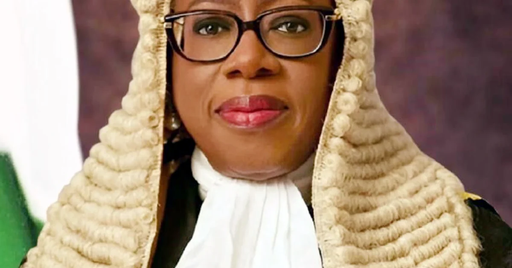

Law & Justice · 12 Oct 2026
2027 Elections: CJN Kekere-Ekun Warns Judges and Lawyers Against Political Alignment

The Chief Justice of Nigeria, Kudirat Kekere-Ekun, has cautioned judicial officers and legal practitioners to maintain strict integrity and avoid partisan political alignment in the handling of political disputes ahead of the 2027 elections.
The Chief Justice of Nigeria, Justice Kudirat Kekere-Ekun, has issued a direct warning to judges and legal practitioners, cautioning them to maintain uncompromised integrity when adjudicating political disputes in the lead-up to the 2027 general elections. The admonition underscores growing institutional concern within the legal sector over partisan entanglements and contentious rulings.
Preserving Judicial Neutrality
According to reports from The Punch, the head of the nation's judicial branch stressed that both members of the bench and the bar must exercise strict ethical standards in managing politically sensitive litigations. Corroborating the directive, LEADERSHIP Newspapers highlighted that the Chief Justice specifically warned judicial officers against political alignment as preparations for the 2027 election cycle begin to take shape.
Political litigation in Nigeria has historically placed immense strain on the court system, often drawing public scrutiny and accusations of bias surrounding pre-election disputes and post-election tribunal outcomes. By directly addressing both the bench and the legal practitioners who file these suits, the Chief Justice's stance aims to insulate the justice system from partisan pressure and rebuild broader public trust in judicial determinations.
Focus on Professional Conduct
The caution serves as a preemptive measure to curb forum shopping, conflicting judgments from courts of concurrent jurisdiction, and the perception of political compromise among judicial officers. Maintaining institutional neutrality remains a vital pillar for democratic stability as political actors contest nominations and electoral mandates.
As political activities gradually gather momentum toward 2027, the focus now shifts to whether oversight bodies, notably the National Judicial Council and relevant disciplinary panels within the legal profession, will apply strict scrutiny and disciplinary actions against any officers or practitioners who breach ethical boundaries in political proceedings.
Sources
- https://punchng.com/2027-cjn-cautions-judges-lawyers-over-political-cases/?utm_source=rss.punchng.com&utm_medium=web
- https://news.google.com/rss/articles/CBMimAFBVV95cUxPOHNPREtnUnFGRG5OdWdLeGtuRmxCNDgxREFDRWRVMzdGTG5NU3hUemlWQ3V6YkVhci1scnFPUllxZHFWdDRHMFQtQ21OUWdMQUtXWm9DaDR3dDFrUmxhbU1fRUZsTHhacXBCMVdIUnUyeXZHdHI0WWRvWURqUVItUWZzWENJeGdpZ0VNSTItR0lZem5TRUZsQQ?oc=5
- https://news.google.com/rss/articles/CBMilgFBVV95cUxQMHFzRDlGQ1hKWkFLVWc1bS1uZGNqOWdVVUxWWEIzWmNOQnBEbXFxc0FDYU9xSnM5T2VvM01jam0wTGo2T19OOExOdlR6M1BlUlJWNkNIMTRDcV9oOWxoby1lMENUYUdXR1N4bHAyTVdjRzdyckFmeHlYSW5HX3ZreWFiSG5ldUZ4UFF0NURBWHF0YzBNNHc?oc=5
Sources
This article was produced by the C. O. Eric AI Newsroom from the cited sources. It is published only after automated evidence and safety checks.